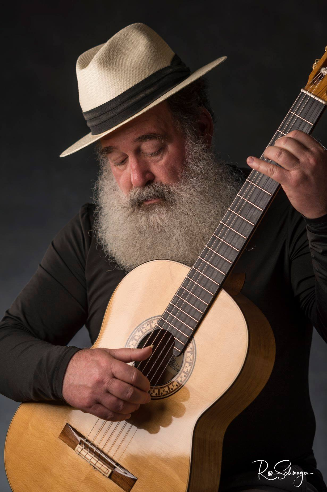
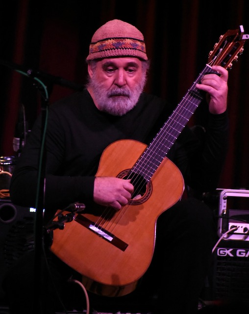
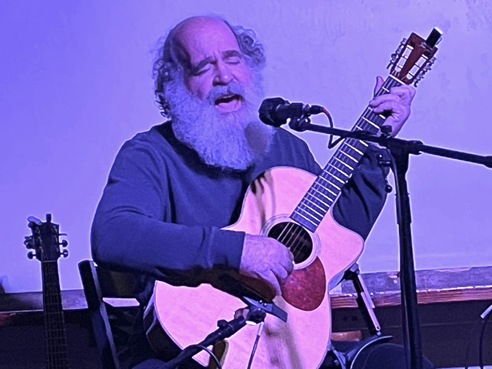
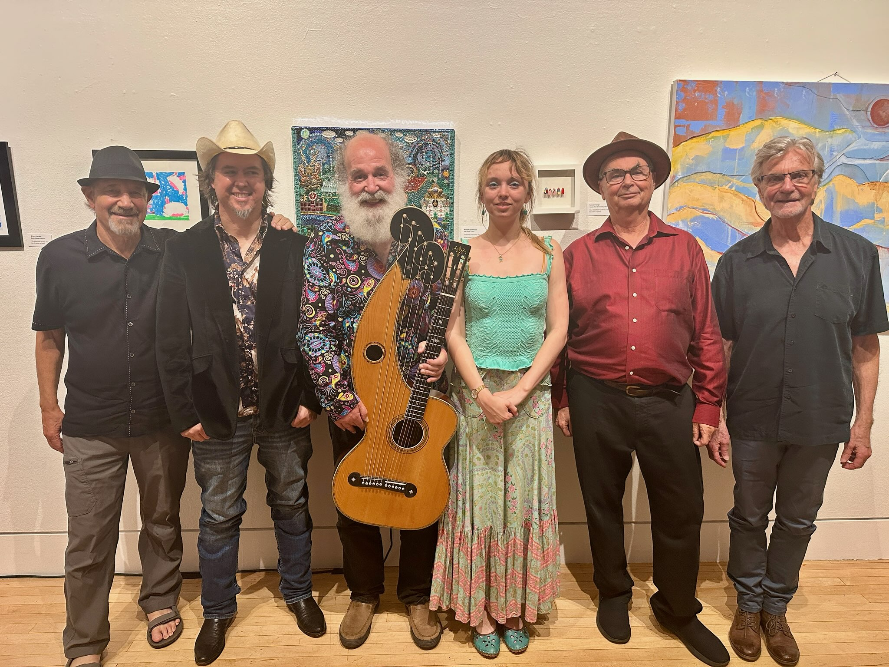
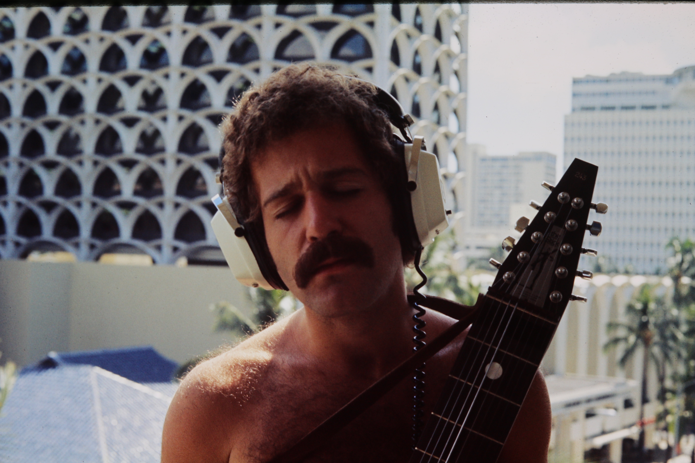
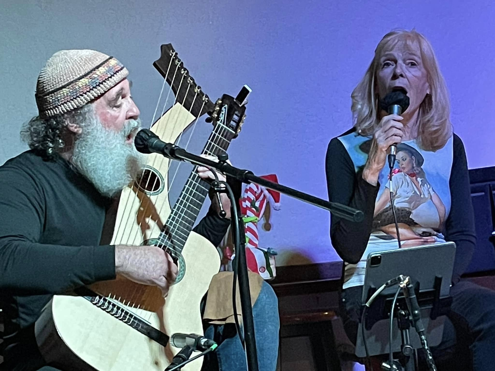

Featured recording
Suzanne - Leonard Cohen
A direct, song-centered recording from John's public SoundCloud.
Open on SoundCloud
Voice, guitar, and acoustic performance
A singer, guitarist, and multi-instrumentalist with a warm hand in folk songs, jazz standards, classical guitar, and community music.
About
John Mahoney is a Chico-based singer, guitarist, saxophonist, and multi-instrumentalist whose musical life moves between solo guitar, vocal standards, folk songs, tribute performances, and collaborative community projects.
His recordings and appearances suggest a wide but connected musical vocabulary: Leonard Cohen, Beatles material, Great American Songbook standards, classical guitar gatherings, big-band settings, and more experimental instrumental work. The throughline is attentive ensemble playing, unhurried phrasing, and a respect for songs that have gathered meaning through time.

Music & Video
A short set of public recordings gives visitors a quick sense of John's range without turning the page into an archive.
Featured recording
A direct, song-centered recording from John's public SoundCloud.
Open on SoundCloud
Recordings
Public tracks include "Tangerine," "Do Nothin' Til You Hear From Me," and "The Man I Love."
Browse SoundCloud
Project context
Project imagery can support future media notes without becoming a full gallery.
Performances
New dates will be posted here when confirmed.


Contact
A confirmed public booking email has not been added yet. For now, use the listening link below as the public point of reference, and replace this note with direct contact details when ready.
John Mahoney on SoundCloud